FlightCal User Guide
FlightCal is a pocket flight computer for pilots. It reproduces the classic E6-B style calculator together with unit conversion, currency conversion, a scientific calculator, holdover time, aviation weather, airport information, a dictionary and a stopwatch — all driven by the same physical keypad on every screen.
- 1. Getting Started
- 2. Keypad
- 3. E6-B
- 4. CONV
- 5. CURR
- 6. CALC
- 7. HOT
- 8. WX
- 9. AIRPORT
- 10. DICT
- 11. SET
- 12. STOP / TIMER
- 13. Data & Offline
1. Getting Started
Every screen shares the same layout: the menu name at the top left, the current UTC clock at the top right, a list of value lines in the middle, and the keypad at the bottom. The active line is highlighted, and results are shown in green.
The trial banner under the header shows the app version, the 30-day trial period and the
end date, for example
SMART FLIGHTCAL ver 1.0.17 · 30 DAY TRIAL · ENDS 2026.12.01, with a
D-30 counter on the right.
Entering a value
- Move the cursor with ▲ ▼, or tap the line directly.
- Press POWER or simply type digits to start editing the selected line.
- C clears the current entry, ⌫ deletes one character.
- +− changes the sign, . enters a decimal point.
Time lines accept a colon, but you can also just type digits. Digits are read from the
right: four digits are read as HHMM and two digits as minutes. So typing
130 gives 01:30, and 0130 gives 01:30
as well.
2. Keypad
The top three rows are always the same. The lower four rows switch between numeric, QWERTY and Korean layouts, so text fields such as the airport search can be typed directly.
| Key | Function |
|---|---|
| FLT | E6-B menu with 14 flight computer functions. |
| CONV | Unit conversion menu with 11 categories. |
| CURR | Currency converter and 12 currency presets. |
| CALC | Calculator: STD, SCI, HMS and DUTY. |
| HOT | Holdover time calculator and holdover timer. |
| WX / NOTAM | Weather screen. The key is labelled both ways: press it once to open WX, press it again from another screen to jump straight to NOTAM. |
| ▲ ▼ | Move the cursor between lines or scroll a list. In the calculator they become MEM RCL and MEM +. |
| POWER | Confirm / edit the selected line, open the selected menu item, start and pause the timer, or open a dictionary entry. |
| BACK | Go up one level, close a popup, or leave a detail view. |
| CONV UNIT | Switch the unit of the active line, for example ft ↔ m, °C ↔ °F or hPa ↔ inHg. |
| AIRPORT | Airport information: time, sun, weather, forecasts and currency. |
| SET | Settings. |
| DICT | Aviation dictionary. It opens the dictionary from any screen. |
| STOP / TIMER | Stopwatch and countdown timer, with a dual label like the WX key. |
Key labels are context sensitive. Inside the scientific calculator the whole keypad turns into function keys, SET becomes INV for inverse functions, and in the timer POWER becomes START / PAUSE while ▼ becomes RESET. The printed labels in each section below reflect what you see on that screen.
3. E6-B (FLT)
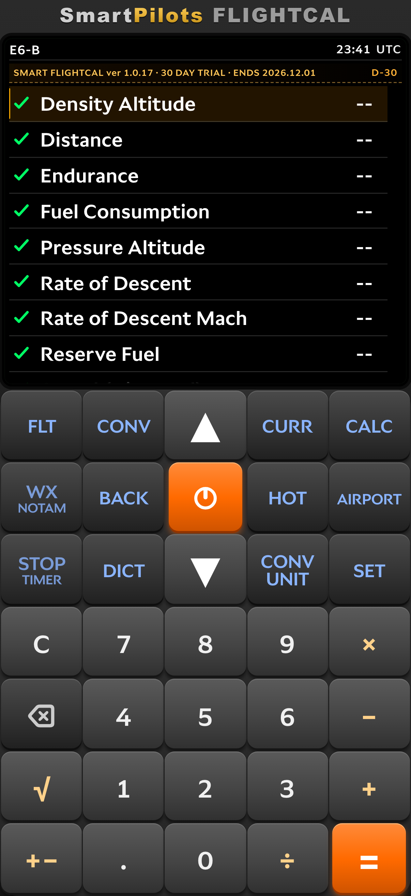
The E6-B menu holds the classic flight computer functions. Select an item with ▲ ▼ and press POWER to open it. Each function is a short list of lines: fill the inputs and the result appears in green. When a screen offers several modes, the mode tabs are shown just under the header.
3.1 Density Altitude
Lines: Press Alt, OAT, Dens Alt. Enter pressure altitude and outside air temperature and the density altitude is computed. On the pressure altitude line CONV UNIT switches ft ↔ m, and on the OAT line it switches °C ↔ °F.
3.2 Distance
Lines: Dist (NM), Dur (HMS), GS (KT). Enter any two values to solve the third — distance, duration or ground speed. The duration line accepts time in hours and minutes.
3.3 Endurance
Lines: Wt (fuel weight) and Rate (fuel flow), with the endurance time as the result. The endurance mode is one of the three tabs of the fuel screen, so you can switch to Fuel Burn or Fuel Rate without going back to the menu.
3.4 Fuel Consumption
This is the Fuel Rate mode of the same screen. Enter fuel weight and duration and the
consumption rate is returned in LB/HR, or KG/HR when the weight
unit is set to kilograms in Settings.
3.5 Pressure Altitude
Lines: Fld Elev, Altim, Press Alt.
The altimeter setting defaults to 1013.25. CONV UNIT switches the
altimeter between hPa and inHg, and the elevation between ft and m.
3.6 Rate of Descent
The climb / descent screen has Climb and Descent tabs and the lines Rate, Alt Chg, GS, Fuel, Time, Dist, Burn. Units are FPM, FT, KT, LB·HR, HMS, NM and LBS. Fill the rate, the altitude change and the ground speed, and the time, distance and fuel burned are solved together.
3.7 Rate of Descent Mach
Lines: Mach, Angle (default 3.0),
OAT (default 15 °C / 59 °F), RoD,
TAS, Spd Sound. Given a Mach number and a descent angle
it returns the rate of descent in FPM, the TAS and the local speed of sound in knots. The
OAT line switches between °C and °F.
3.8 Reserve Fuel
Lines: Req Fuel, Rsv %, Alt Fuel, Hold Fuel, Conting, Reserve, Total Req. The reserve percentage defaults to 15 %, alternate and holding fuel to 0. Contingency is the trip fuel times the reserve percentage; reserve is contingency plus alternate plus holding fuel; total required is trip fuel plus reserve.
3.9 Speed (Airspeed)
Five tabs: Planned TAS, Actual TAS, Required CAS, Planned MACH#, Actual MACH#. Planned TAS takes CAS, OAT and pressure altitude and returns TAS, TAT and Mach. Actual TAS uses TAT instead of OAT and returns OAT. Required CAS reverses the calculation, giving CAS from TAS. The two Mach tabs work with Mach and temperature only.
3.10 Time (ETA)
Lines: Dist (NM), GS (KT), Time (HMS). A quick time en route calculation from distance and ground speed, or the ground speed required to cover a distance in a given time.
3.11 Top of Descent
Lines: Alt, Tgt, GS,
Path (default 3.0°), Dist,
Time, ROD. Enter the current altitude, the target
altitude and the ground speed to get the distance and time to start down, plus the
required rate of descent.
3.12 Wind Component
Lines: RWY, WDIR, WSPD, HEAD, TAIL, CROSS. Enter the runway direction, wind direction and wind speed and the headwind, tailwind and crosswind components are shown; the crosswind is marked left or right.
3.13 Fuel Uplift
Lines: Tot Req, Current, Density,
Uplift, Uplift Gal, Tot Onbd. Density
defaults to 6.7 lb/gal. The uplift is the required fuel minus the fuel
already on board, converted to gallons at the given density, and the total on board after
uplifting is shown as well.
3.14 Cold Temp Correction
Lines: Indicated, Fld Elev, OAT, ΔISA, Corr, Corr Alt. It applies the cold temperature altitude correction to an indicated altitude for a given field elevation and OAT, and displays the ISA deviation and the corrected altitude. Altitudes switch between ft and m, and the temperature between °C and °F.
4. CONV — Unit Conversion
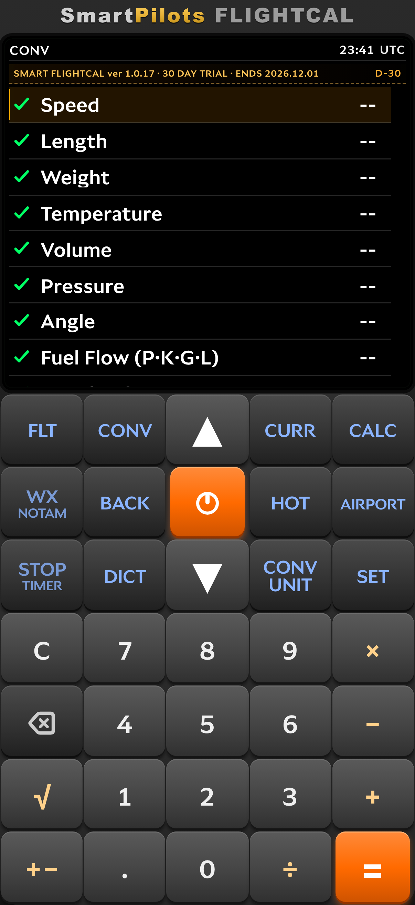
Choose a category and the conversion screen shows four lines: the value you type, the SET UNIT line, the CONV UNIT line and the Result. Move the cursor to a unit line and use CONV UNIT, the arrow keys or a tap to pick another unit; the result updates immediately.
| Category | Units available | Default pair |
|---|---|---|
| Speed | m/s, kt, km/h, mph, fps, Mach | kt → m/s |
| Length | m, km, ft, NM, mi, in | NM → ft |
| Weight | kg, lb, ton (US) | lb → kg |
| Temperature | °C, °F, K | °F → °C |
| Volume | L, gal (US), gal (imp) | gal (US) → L |
| Pressure | hPa, inHg, mb, psi | inHg → hPa |
| Angle | °, rad, grad, %slope | ° → %slope |
| Fuel Flow (P·K·G·L) | L/hr, gal/hr, lb/hr, kg/hr | gal/hr → lb/hr |
| Density / SG | kg/L, SG, lb/gal (US), lb/gal (imp) | lb/gal (US) → kg/L |
| Mach ↔ TAS | Mach, temperature and TAS in one screen | — |
| Time Zone | Local time conversion between zones | — |
The default pair for temperature, weight, pressure and length follows the units chosen in Settings, so a pilot working in °C and hPa always starts from the familiar side.
5. CURR — Currency
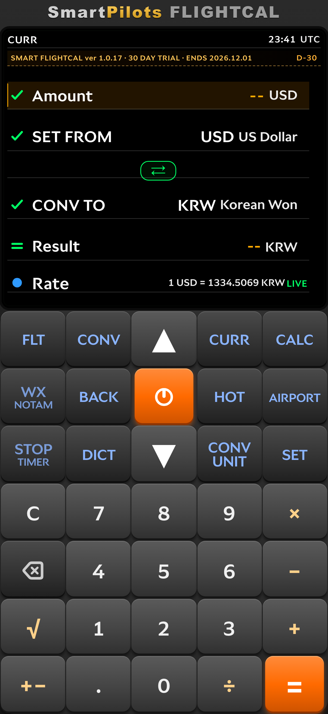
The converter screen has five lines. Type the Amount, set
SET FROM and CONV TO, and the converted
Result appears in green. The swap button between the two currency lines
reverses the pair, and the Rate line shows the live quote, for example
1 USD = 1334.5069 KRW.
Press POWER on a currency line to open the searchable currency list. Selecting the same currency on both sides is not allowed, so the app always keeps a valid pair.
Tap the rate line to open the rate chart; BACK or CLR closes it. The status at the end of the rate line tells you where the number came from:
| Status | Meaning |
|---|---|
LIVE |
A fresh quote fetched less than a minute ago. |
12m ago |
Fetched recently; shown in minutes, then hours and minutes. |
OFFLINE · CACHED 1D 3h |
The network is unavailable, so the last stored rate is used and its age is shown. |
DEFAULT · BUILT-IN |
No stored rate yet; the built-in reference rate is used. |
The CURR menu also lists 12 frequently used currency presets, which open the converter already set to that pair.
6. CALC — Calculator
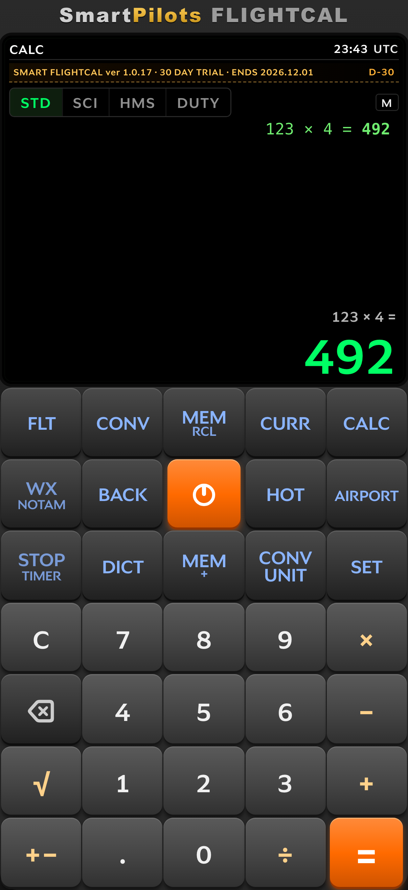
Four modes are available as tabs, and pressing CALC cycles through them: STD → SCI → HMS → DUTY → back to the calculator menu.
6.1 STD
A standard four-function calculator with a four-line history above the result. Press POWER or = to evaluate.
6.2 SCI
Scientific mode relabels the keypad. SET becomes INV; press it to switch the next function to its inverse.
| Key | Normal | With INV |
|---|---|---|
| sin | sin | sin⁻¹ |
| cos | cos | cos⁻¹ |
| tan | tan | tan⁻¹ |
| ln | ln | eˣ |
| log | log | 10ˣ |
| x² | x² | — |
| 1/x | 1/x | — |
| π | π | — |
| eˣ | eˣ | — |
| xʸ | power | — |
| √x | square root | — |
| ! | factorial | — |
▲ recalls the memory value and ▼ adds the current result to memory; pressing ▲ twice in a row clears the memory.
6.3 HMS
A dedicated time calculator. Enter hours, minutes and seconds with the colon key and multiply or divide by a plain number; the result stays in hours, minutes and seconds. The dictionary key clears the current entry, and the memory keys work as in STD.
6.4 DUTY
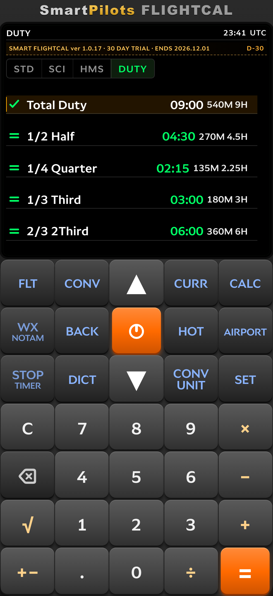
Enter the total duty time and the screen calculates the common fractions in one go:
1/2 Half, 1/4 Quarter, 1/3 Third and
2/3 2Third. Each line shows the same value three ways — hours and
minutes, total minutes and decimal hours — for example 04:30 270M 4.5H.
7. HOT — Holdover Time
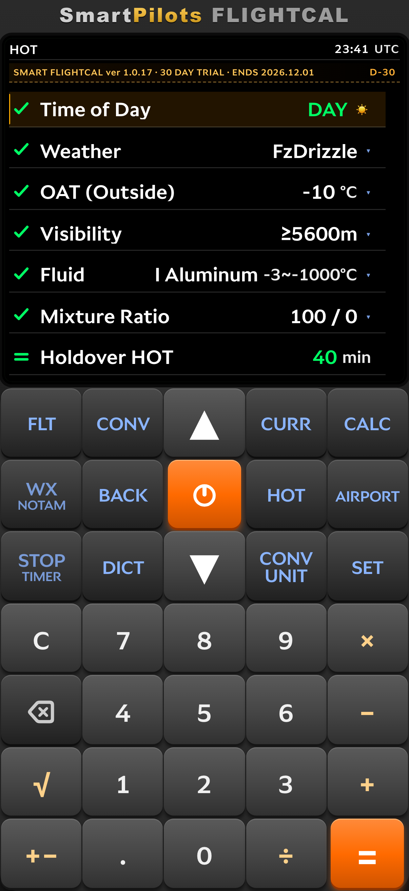
Lines: Time of Day, Weather, OAT (Outside), Visibility, Fluid, Mixture Ratio, Holdover HOT.
- Time of Day switches between DAY and NIGHT with CONV UNIT or the arrow keys.
- Weather, Visibility, Fluid and Mixture Ratio cycle through their options with CONV UNIT or the arrow keys; a tap opens the full list.
- OAT is typed in directly and follows the temperature unit in Settings.
The result line shows the holdover time in minutes. If the OAT is above freezing the screen reports that de-icing is not needed. If the temperature is below the fluid's operating range, the result shows as unavailable instead of a time.
Press POWER on the result line, or tap it, to start the HOT Timer already loaded with the calculated minutes. The timer screen shows START TIME and Time Remaining and counts down once started; MEM or = toggles start and reset, and CLR clears it.
8. WX — Weather
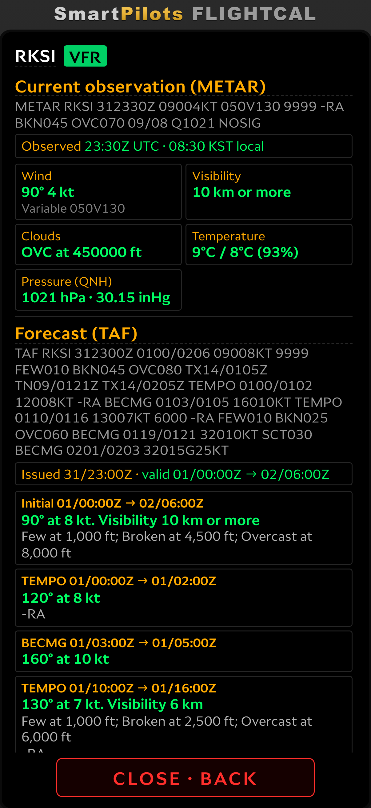
Type a four-letter ICAO code and the weather is fetched automatically. The CONV UNIT key cycles the three modes: ATIS → METAR/TAF → NOTAM. The WX key itself is dual-labelled, so pressing NOTAM switches straight to NOTAM and pressing it again returns to the previous mode.
- ATIS shows the current ATIS text for supported airports. If ATIS is not available for that airport the screen falls back to METAR/TAF.
- METAR/TAF shows the raw report, a flight category badge, and a decoded card with wind, visibility, weather, clouds, temperature and pressure (QNH). The TAF is split into its initial, temporary and becoming periods.
- NOTAM lists notices with the filters ALL, RWY, TWY, NAV, AIRSPACE, COM, APRON and FDC, plus a Q-code subject filter. A decode toggle turns the raw text into plain descriptions.
Recent results are cached, so the last weather and NOTAM you looked at is still readable without a connection.
9. AIRPORT
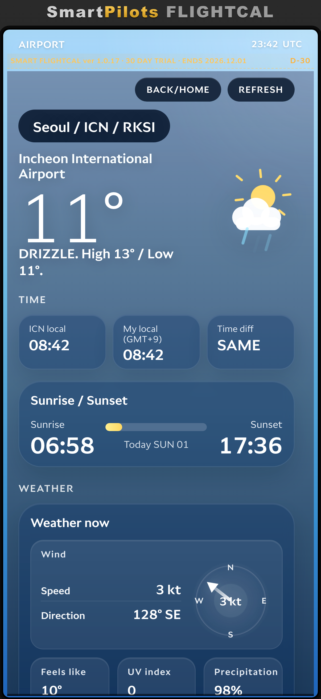
Search by ICAO or IATA code with the on-screen keypad. The BACK/HOME button steps back through the airports you opened and REFRESH reloads the data with a loading indicator.
A single airport page collects:
- Time — airport local time, your own local time and the difference.
- Sunrise / Sunset — with a daylight bar for the current day.
- Weather now — wind speed and direction on a compass rose.
- Feels like, UV index, precipitation and moon phase.
- 7-day forecast, METAR and TAF.
- FX — the local currency against your home currency.
10. DICT — Dictionary
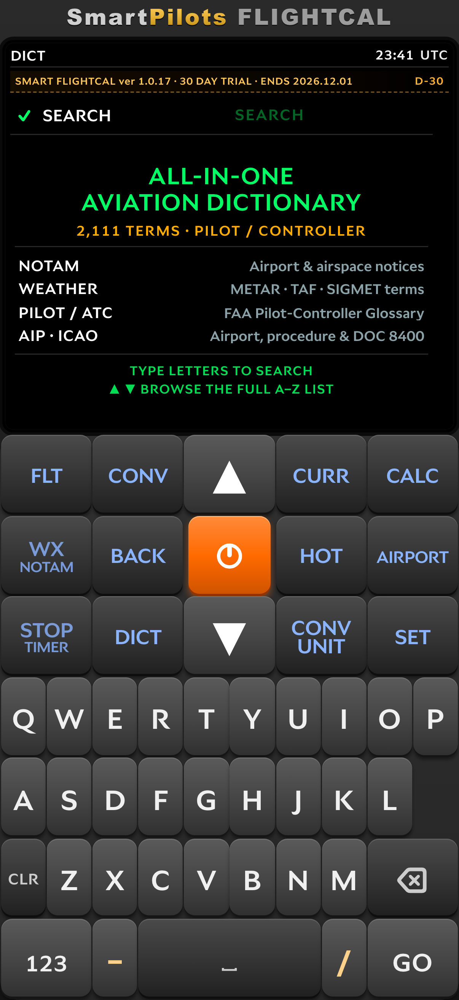
The dictionary holds 2,111 terms for pilots and controllers, grouped into NOTAM, WEATHER, PILOT / ATC and AIP · ICAO. Type any part of a term to search; the list filters as you type. ▲ ▼ browse the full A–Z list page by page, and a dash or a slash can be typed for compound terms.
Press POWER on an entry to read the full definition and BACK to return to the list. DICT opens the dictionary from any other screen.
11. SET — Settings
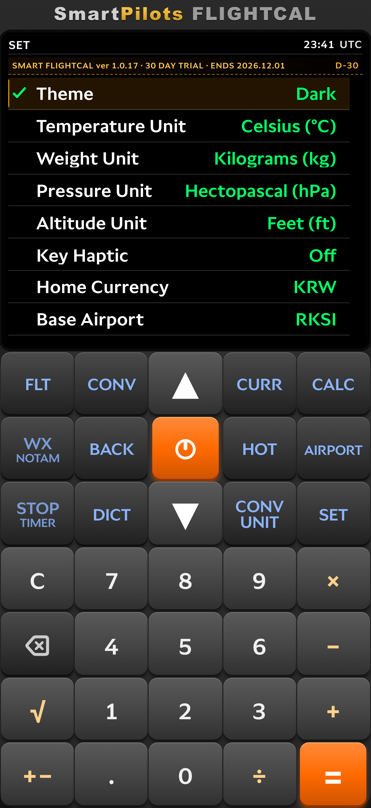
| Setting | Options / meaning |
|---|---|
| Theme | Auto (System), Light, Dark, Dusk, Night. |
| Temperature Unit | Celsius (°C) or Fahrenheit (°F). |
| Weight Unit | Kilograms (kg) or Pounds (lbs). |
| Pressure Unit | Hectopascal (hPa) or Inches Hg (inHg). |
| Altitude Unit | Feet (ft) or Meters (m). |
| Key Haptic | Vibration feedback on key presses, on or off. |
| Home Currency | Base currency used by the converter and the airport FX section. |
| Base Airport | Default airport code. |
| Startup Screen | The screen shown at launch: E6-B, WX, AIRPORT, DUTY, CALC, CONV, CURR, HOT or DICT. |
| Reset | Restores the default settings. |
| Version | Installed app version. |
The unit settings are used everywhere else in the app — E6-B results, fuel weights, altimeter values and holdover temperatures all follow them.
12. STOP / TIMER
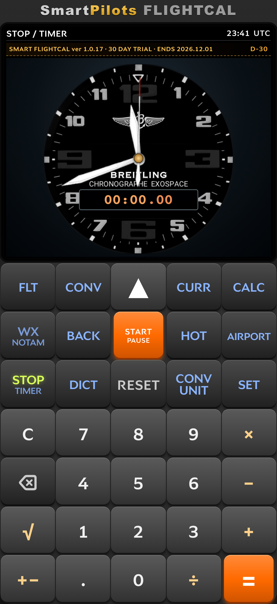
The timer screen has two modes. CONV UNIT switches between STOPWATCH and COUNTDOWN.
- POWER or = starts and pauses.
- CLR or ▼ resets to zero.
- ▲ adds one minute to the countdown.
-
In countdown mode you can type a six-digit time as
hhmmss; the maximum is 99:59:59.
The screen shows an analog chronograph face together with a digital readout, so it can be read at a glance in the cockpit.
13. Data, Caching and Trial
- Settings, last inputs and cached weather, NOTAM and exchange rates are stored on the device, so the app keeps working without a connection where possible.
- Weather, NOTAM and exchange-rate features need a network connection to refresh; when offline, the last cached values are shown and marked accordingly.
- FlightCal runs as a 30-day trial, after which the premium features can be unlocked through the App Store or Google Play. Purchase handling is described in the Privacy Policy.
Contact
Questions, bug reports or feature requests:
SmartPilots
Email: smartpilot@smartpilot.co.kr
한국어 설명서 보기